Multifunctional Electronic Materials and Devices Research Laboratory
MeMDRL designs ferroic and multifunctional materials, prints and integrates them with semiconductors, and uses modeling, machine learning, and quantum-informed experiments to turn those materials into sensors, actuators, and low-power electronics.
Core strength in materials synthesis and nonlinear properties, applied through four pillars: functional ferroics, sensors and energy transduction, printed hybrid microelectronics, and computation for materials discovery.
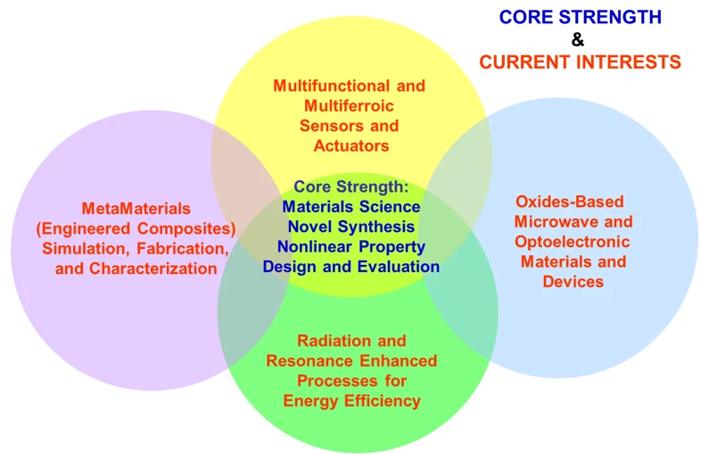
Research themes describe active areas, not closed contracts. Each pillar lists current student topics; follow a name to that student’s profile.
Functional ferroics and nanocomposites
Oxides, polymers, MOFs, and nanocomposites whose dielectric, piezoelectric, ferroelectric, or multiferroic response is designed on purpose — including core-shell and 1-3 composites.
Current student topics
Magnetoelectric Coupling in CFO-BTO Composite System — William Paul Flynn
New materials for the cathode of intermediate-temperature solid oxide fuel cells (IT-SOFC) — Le Quynh (Nhu) Huynh
Numerical Study and Aerosol Jet fabrication of Piezo Composites — Bryan Gamboa
The same materials put to work as devices: Chemical and structural sensing, actuation, harvesting, and wireless readout, including energy transduction and bio-facing tools.
Current student topics
Challenges and opportunities in corrosion sensing — Leeroy Clarke
Effect of ferroelectric poling on CO2 sensing in UiO-66/BaTiO3 composite thin films — Austine Uwumwonse
Compact custom-designed antenna for underground wireless communication — Hollis Alden
P(VDF-TrFE)/BaTiO3 nanocomposite films as self-powered flexible piezoelectric sensors — Esrat Ara Ema
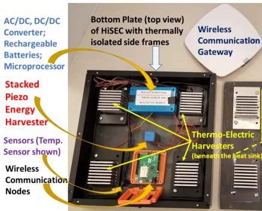
Printed microelectronics and hybrid integration
Drop-on-demand inkjet and aerosol-jet deposition, hybrid additive manufacturing, and how printed ferroics and oxides meet semiconductors — including memories and process screening.
Current student topics
Volume confinement as a design principle and screening workflow for reactive inkjet printing of zinc oxide films — Sean Garnsey
Towards 3D monolithic ferroelectric memories — Victor Thiha
Numerical modeling of nanofluidic dynamics in a droplet for on-demand printing — Carlos Acosta
YSZ as a solid electrolyte for room temperature metal oxygen solid state batteries — Trust Abajuo
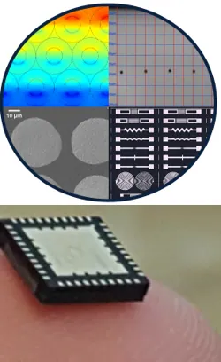
Modeling, machine learning, and quantum materials discovery
Computation that designs or validates materials and processes: FEM and device models, machine learning for process control, stacked 2D materials, and quantum-informed oxides for sensing and computing.
Current student topics
Computational analysis of dielectric tunability and quantum-paraelectric behavior in SrTiO3 — Ayush Neupane
Simulation and model validation of stacked 2D materials applied to hexagonal boron nitride (hBN) and graphene — Matthew Trippy
Micro-/Nano-structure and transport property of inkjet fabricated thin films — Luis A. Santillan
Automating drop-on-demand jetting optimization using modern machine learning techniques — Max Estrada
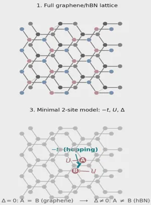
Facilities
Laboratory capabilities
MeMDRL supports the full path from powder and ink to electroceramic, crystals, printed or thin-film devices and measured performance. Tools are available to group members after safety training. Collaborators and visitors work with the laboratory by arrangement.
Hybrid additive manufacturing of electronics
Inkjet, aerosol-jet, and direct-ink writing of functional inks, with ultraviolet, near-infrared, and pulsed-light processing. Used for printed oxides, metals, and multilayer electronic stacks.
Dielectric, pyroelectric, and magnetoelectric measurement
Capacitance, loss, impedance, and magnetoelectric response from cryogenic to elevated temperature, including measurements under applied magnetic field.
Microwave and environmental testing
High-frequency network analysis through millimeter-wave bands, together with temperature-humidity environmental chambers for reliability and application-relevant conditions.
Electromechanical and materials testing
Dynamic mechanical loading, ink and slurry rheology, and routine wet-chemical characterization in support of processing and device packaging.
Ferroic and piezoelectric evaluation
Polarization, piezoelectric charge response, and impedance spectroscopy for ferroelectric, piezoelectric, and multiferroic ceramics, crystals, films, and composites.
Strain, vibration, and thermal expansion
Laser vibrometry and dilatometry for small-signal displacement, resonance, and thermal-expansion behavior over a wide temperature range.
Structure and diffraction
X-ray diffraction for phase identification, structure-property work, and crystal orientation.
Microscopy and nanoscale imaging
Optical microscopy with heating and cooling stages, scanning electron microscopy with elemental analysis, vibrational spectroscopy, and scanning-probe methods including piezoresponse imaging.
Thin-film deposition
Magnetron sputtering, thermal evaporation, and ultra-high-vacuum multi-source sputtering for metals, oxides, and device electrodes.
Nanofabrication and patterning
Maskless lithography, stylus profilometry, sol-gel spin coating, and spray pyrolysis for nanoparticles and conformal coatings.
Electrical probe measurement
Wafer- and film-level probing, semiconductor parameter analysis, and four-point resistivity measurement.
Optical characterization
Ultraviolet-visible-near-infrared spectrometry, polarized microscopy, optical spectrum analysis, ellipsometry for index and thickness, and electro-optic coefficient measurement.
Computation and modeling
Finite-element device and materials modeling, circuit design tools, and scientific analysis software used with experimental work in the laboratory.
Ceramic and sample preparation
Milling, pressing, polishing, and dicing; high-temperature and vacuum furnaces; plasma etching; and sintering, including microwave-assisted processing.
Robert E. Clarke, Jr. Distinguished Professor of Electrical Engineering
Director, M.S. in Advanced Materials Engineering · Co-director, MeMDRL
Designs and evaluates multifunctional oxides, ferroics, and printed devices for sensing, actuation, microwave and optical control, and energy transduction.
The perovskite structure — a review, Mater. Res. Innov. (2000). PDF
ACerS Distinguished Life Member (2018).
Postdoctoral researchers (4)
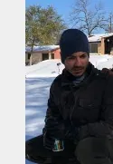
Carlos Acosta, Ph.D.
Postdoctoral fellow (part-time)
Computational modeling and sensitivity analysis of piezoelectric and piezoresistive materials, with additive-manufacturing process tunability and multi-phase flow simulation.
Printed microelectronics & hybrid integration
Modeling, ML & quantum discovery
Core strength and current projects
Core strength: C, C++, and Python; MAPLEsoft; Mathematica; ANSYS Fluent and Workbench; COMSOL; ABAQUS; LabVIEW.
Projects: DOE Consortium of Advanced Additive Manufacturing Research and Education for Energy Related Systems; DoN H3D of multiferroic electroceramics for nanomaterials-defined sensors and actuators; numerical modeling and machine learning.
Current research topic: Numerical modeling of nanofluidic dynamics in a droplet for on-demand printing
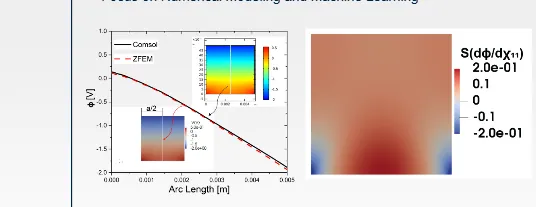
Sensitivity analysis from Taylor series and finite-element models
Education: B.S. ME, EAFIT Medellín (2009); M.S. ME, UTSA (2012); M.S. EE, UTSA (2018); Ph.D. EE, UTSA (2020).
Bryan Gamboa, Ph.D.
Postdoctoral fellow (part-time)
Design, simulation, fabrication, and experimental evaluation of piezoelectric energy harvesters and printed piezoelectric nanocomposites.
Projects: DoN piezoelectric energy-harvesting evaluation; DoN H3D of piezoelectric nanoparticles for sensors and energy harvesting; TxDOT hybrid integrated sensing and energy-conversion module; AFRL modeling of external energy exposures with experimental validation.
Current research topic: Numerical Study and Aerosol Jet fabrication of Piezo Composites
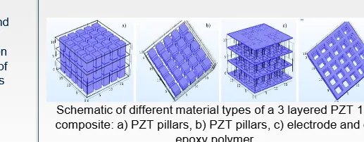
Schematic of a three-layer PZT 1-3 composite
Education: B.S. EE, UTSA (2014); M.S. MatE, UTSA (2016); Ph.D. EE, UTSA (2025). Prior AFRL contractor and research computer engineer experience.
Printed electronic fabrication, ink formulation, image-quality analysis, and inkjet process development for metal-oxide microelectronics.
Printed microelectronics & hybrid integration
Core strength and current projects
Core strength: printed electronic fabrication; ink formulation; image-quality analysis; inkjet-printing characterization; digital file preparation and workflow; MATLAB / Visual Basic; radiation detection; metal-oxide materials for sensing.
Projects: ONR / DoN Hybrid Three-Dimensional Deposition and Development (H3D) of reactive inkjet-printed metal-oxide microelectronics.
Current research topic: Volume confinement as a design principle and screening workflow for reactive inkjet printing of zinc oxide films
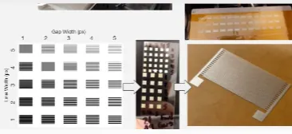
Test images for printing quality development
Education: Ph.D., Electrical Engineering, UTSA (2026). Earlier training includes nanoengineering (NCSU) and graphic communication (Cal Poly SLO), with research stays at Fraunhofer IOF and FUJIFILM Dimatix.
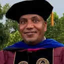
Samson Ghilu, Ph.D.
Postdoctoral fellow (part-time)
Developing biosensors for detecting cancer prognosis and drug resistance (RNA sample test).
Sensors, actuators & energy
Education, interests, and core strength
Core strength: Leadership; publications and writing; basic Python.
Key interests: Computational biology; biosensors; tissue engineering; imaging; design and fabrication of advanced materials and devices; deep learning.
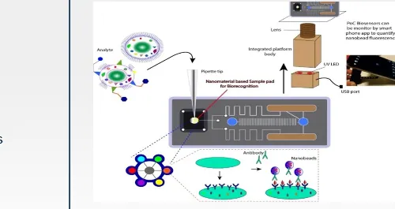
Biosensor platform schematic
Education: A.S. Petroleum Technology, Williston State College, North Dakota, 2014. M.S. Advanced Materials Engineering, UTSA.
Visiting faculty and other researchers (2)
Luiz Fernando Cótica, Ph.D.
Visiting Associate Professor
Home affiliation: Associate Professor of Physics, Department of Physics, State University of Maringá (UEM), Brazil
Multiferroic and functional ceramics for smart electronics, sensors, and energy harvesters; AI-assisted materials discovery; X-ray and neutron diffraction (Rietveld refinement).
Functional ferroics & nanocomposites
Modeling, ML & quantum discovery
Maria Fernanda Basurto Armijo
Other Researcher · Research Volunteer
Synthesis and surface modification of cobalt ferrite–barium titanate core-shell nanoparticles; laboratory management and training.
Projects: DOE vision-based automation of drop-on-demand inkjet drop formation for drop optimization and ink characterization; TxDOT hybrid integrated sensing and energy-conversion module; numerical modeling and machine learning.
Current research topic: Automating drop-on-demand jetting optimization using modern machine learning techniques
Ph.D. student, Department of Electrical Engineering · expected May 2027
Collaborates with Los Alamos National Laboratory on next-generation cathode and electrolyte materials for intermediate-temperature solid oxide fuel cells.
Conference talks (ACerS Spring Meeting 2026, Bellevue, WA). N. Huynh, Z. Corey, Q. Jia, R. Guo, C. Chen, A. Chen, “Stabilization and ionic transport in δ-Bi2O3 thin films.” N. Huynh, C. Kreller, A. Chen, S. Kunwar, T. DeForest, R. Guo, C. Chen, “Characterization of double perovskite LaBa(Fe,Co2−x)O5+δ (LBFCO) as a cathode candidate for intermediate-temperature solid oxide fuel cells.”
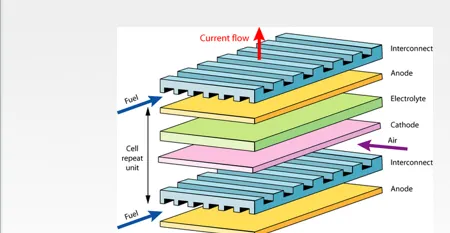
Solid oxide fuel cell stack schematic
Education: B.S. Electrical Engineering, UTSA, May 2019. M.S. Advanced Materials Engineering, UTSA, May 2021. Ph.D. Electrical Engineering, UTSA, expected May 2027.
Matthew Trippy
Ph.D. Candidate, Electrical Engineering
Quantum simulation of 2D van der Waals heterostructures (hexagonal boron nitride / graphene) using variational quantum eigensolver (VQE) methods, with applications to advanced materials discovery for RF/microwave and sensor systems.
Modeling, ML & quantum discovery
Core strength and current projects
Core strength: Python (Qiskit, Quantum ESPRESSO); RF modeling (COMSOL, REMCOM XFDTD, MATLAB); RF/phased-array systems engineering; additive manufacturing and printed electronics; ferroelectric and advanced materials characterization; technical writing and government proposal development.
Current research topic: Simulation and model validation of stacked 2D materials applied to hexagonal boron nitride (hBN) and graphene
Master’s researchers (13)
Leeroy Clarke
M.S. student, Department of Electrical Engineering
Advanced Materials Engineering · anticipated May 2027
Inkjet-printed sensing for early detection of degradation and corrosion on an automotive paint system.
Education: B.S. Chemical Engineering, Texas A&M University–Kingsville, 2017. M.S. student in electronics and communication / MatE, UTSA, anticipated May 2027.
MC
Matthew Callaghan
M.S., Advanced Materials Engineering
Esrat Ara Ema
M.S. student, Advanced Materials Engineering · expected 2027
Thesis: Inkjet-printed P(VDF-TrFE)/BaTiO3 nanocomposite films as self-powered flexible piezoelectric sensors.
Projects: Formulating beta-phase-optimized PVDF-TrFE/BaTiO3 printable inks and inkjet-printing them into poled, flexible sensors validated on subtle stimuli for self-powered wearable health monitoring.
Current research topic: P(VDF-TrFE)/BaTiO3 nanocomposite films as self-powered flexible piezoelectric sensors
Current research topic: Towards ferroelectric thin films of UiO-66(Hf) for sensors and electronics
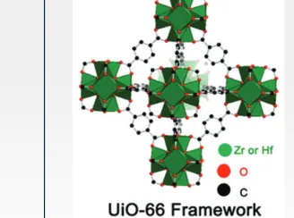
UiO-66 framework schematic
Education: B.S. EE, Houston Christian University (2024). Recipient of the 2025 ECE Outstanding Graduate Research Award (M.S.).
Aaron Maclovio Merritt
M.S. MatE student, Department of Electrical Engineering
expected 2028
Fabrication of BaTiO3 core-shell nanoparticles using a USP-3ZNP system.
Functional ferroics & nanocomposites
Education, interests, and core strength
Core strength: Sample preparation and characterization: advanced TEM (STEM, HR-TEM, SAED, holography); TEM grid and SEM stub prep; bulk polishing; HE and planetary ball milling; glovebox use and reactive materials handling.
Key interests: Functional nanomaterials; additive manufacturing of nanoscale materials; advanced electron microscopy characterization; ceramics and metal oxides.
Education: B.S. Physics, The University of Texas at San Antonio, 2026. M.S. Advanced Materials Engineering, UTSA, expected 2028.
LM
Lissa Mpinganzima Mutabazi
M.S., Electrical Engineering
AN
Ayush Neupane
M.S., Advanced Materials Engineering
Printed microelectronics & hybrid integration
Modeling, ML & quantum discovery
Core strength and current projects
Current research topic: Computational analysis of dielectric tunability and quantum-paraelectric behavior in SrTiO3
SN
Sarah Ngombe
M.S., Advanced Materials Engineering
Priya Sudarmani
M.S. student, Electrical Engineering
Victor Thiha
M.S. student, Department of Electrical Engineering
HZO-based FeRAM for 3DHI and CMOS compatibility.
Printed microelectronics & hybrid integration
Core strength and current projects
Core strength: C++, Python, MATLAB, COMSOL, Verilog, and DEVSIM.
Current research topic: Towards 3D monolithic ferroelectric memories
Core strength: Leadership; web development; MATLAB; COMSOL; Arduino; algebra.
Current research topic: Effect of ferroelectric poling on CO2 sensing in UiO-66/BaTiO3 composite thin films
Key interests: Computational science; data analysis; semiconductor materials; functional materials design and integration; energy-efficient and low-power technologies; advanced materials for environmental applications; thin-film and device-level engineering.
Publications. Accessing dynamic disorder in AlPO4-5 using single-crystal diffuse scattering and ab-initio molecular dynamics. Design of semiconductor-based photocatalysts for CO2 reduction and green hydrogen production.
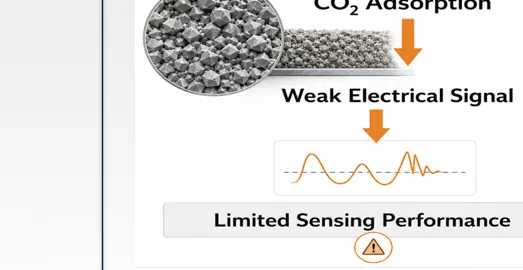
CO2 adsorption and limited sensing performance schematic
Education: B.S. Industrial Chemistry, University of Benin, 2016. M.S. Materials Chemistry and Mineralogy, Universität Bremen, 2023. M.S. Advanced Materials Engineering, UTSA.
RS
Roy Steuer
M.S., Advanced Materials Engineering
Undergraduate researchers (3)
AB
Aiden Bullard
B.S., Electrical Engineering
GB
Gabriel Butcher
Undergraduate researcher
KC
Kilian Culwell
B.S., Electrical Engineering
Alumni and visitors since 2007
Doctoral and master’s graduates with their dissertations and theses, former postdoctoral researchers, visiting faculty and doctoral candidates, and undergraduate and pre-college researchers.
Ph.D. alumni 15
Sean Garnsey2026, Ph.D.
Printed electronic fabrication, ink formulation, image-quality analysis, and inkjet process development for metal-oxide microelectronics.
Core strength: printed electronic fabrication; ink formulation; image-quality analysis; inkjet-printing characterization; digital file preparation and workflow; MATLAB / Visual Basic; radiation detection; metal-oxide materials for sensing.
Projects: ONR / DoN Hybrid Three-Dimensional Deposition and Development (H3D) of reactive inkjet-printed metal-oxide microelectronics.
Current research topic: Volume confinement as a design principle and screening workflow for reactive inkjet printing of zinc oxide films
Test images for printing quality development
Education: Ph.D., Electrical Engineering, UTSA (2026). Earlier training includes nanoengineering (NCSU) and graphic communication (Cal Poly SLO), with research stays at Fraunhofer IOF and FUJIFILM Dimatix.
Reactive inkjet printing of nanostructured metal oxide microelectronics
William Paul Flynn2025, Ph.D.
Materials jetting and modeling of printed multiferroic CFO–BTO composites; additive manufacturing and wireless sensing.
Current research topic: Magnetoelectric Coupling in CFO-BTO Composite System
DoN: 1-3 stacked composites, FEA optimization, printed ceramics with UV-curable polymers and conductors; CFO/BTO core-shell particles; antenna modeling.
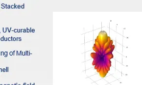
Simulated far-field pattern of a 3D-printed antenna array
Education: B.S. Physics, UTSA (2011); M.S. MatE, UTSA (2019). Inaugural EMRG Ph.D. Fellow; 2025 Mo and Jila Jamshidi Fellowship.
Now at Firefly Aerospace.
Materials jetting fabrication and modeling of printed multiferroic CFO–BTO composites for electronic applications
Now at Firefly Aerospace.
Bryan Gamboa2025, Ph.D.
Design, simulation, fabrication, and experimental evaluation of piezoelectric energy harvesters and printed piezoelectric nanocomposites.
Projects: DoN piezoelectric energy-harvesting evaluation; DoN H3D of piezoelectric nanoparticles for sensors and energy harvesting; TxDOT hybrid integrated sensing and energy-conversion module; AFRL modeling of external energy exposures with experimental validation.
Current research topic: Numerical Study and Aerosol Jet fabrication of Piezo Composites
Schematic of a three-layer PZT 1-3 composite
Education: B.S. EE, UTSA (2014); M.S. MatE, UTSA (2016); Ph.D. EE, UTSA (2025). Prior AFRL contractor and research computer engineer experience.
Experimental and numerical evaluation of stacked piezoelectrics and composite structures for high-efficiency mechanical-to-electrical energy conversion
Wasim Hafiz Dipon2023, Ph.D.
Self-sustaining multi-sensing and wireless communication powered by energy harvesting from road traffic and heat.
Education: M.S. EE thesis (2016, ProQuest): ultra-low-power embedded system with sensing and data logging for efficient operation of energy harvesting from road traffic.
Now at Caterpillar Inc.
Self-sustaining multi-sensing and wireless communication system powered by efficient energy harvesting from road traffic and heat
Now at Caterpillar Inc.
S. Hossain2023, Ph.D.
Quantitative and experimental analysis of magnetoelectric and photothermal properties of cobalt ferrite–barium titanate core-shell nanocomposites for biomedical applications
Joseph John Parsi2022, Ph.D.
Smart Tooth: a continuous glucose monitor utilizing pulsed photoacoustic technology
Brandon Young2020, Ph.D.
Exploration of ferroic and multiferroic nanomaterials and nanocomposites for hybrid 3D deposition of electromagnetic field sensitive devices
Carlos Acosta2020, Ph.D.
Computational modeling and sensitivity analysis of piezoelectric and piezoresistive materials, with additive-manufacturing process tunability and multi-phase flow simulation.
Core strength: C, C++, and Python; MAPLEsoft; Mathematica; ANSYS Fluent and Workbench; COMSOL; ABAQUS; LabVIEW.
Projects: DOE Consortium of Advanced Additive Manufacturing Research and Education for Energy Related Systems; DoN H3D of multiferroic electroceramics for nanomaterials-defined sensors and actuators; numerical modeling and machine learning.
Current research topic: Numerical modeling of nanofluidic dynamics in a droplet for on-demand printing
Sensitivity analysis from Taylor series and finite-element models
Education: B.S. ME, EAFIT Medellín (2009); M.S. ME, UTSA (2012); M.S. EE, UTSA (2018); Ph.D. EE, UTSA (2020).
Experimental and numerical analysis of multi-phase aqueous solutions at steady and unsteady conditions using optoelectric techniques
Meng Li2018, Ph.D.
Multiscale simulation and evaluation of mechanical and electromechanical sensing materials for extreme pressure applications
Moumita Dutta2017, Ph.D.
Ferroics and multiferroics for dynamically controlled terahertz wave propagation
Soutik Betal2017, Ph.D.
Magnetoelectricity in multi-scale composites and application in nanorobotics for live cell manipulation
Juan P. Tamez2017, Ph.D.
Design, simulation and experimental evaluation of tri-phasic piezoelectric composite transducers
Ye Wu2016, Ph.D.
Magnetic field effect on capacitance and photocurrent properties of metal oxides
Madhu Pal2014, Ph.D.
Nanostructure characteristics of ferroics and bio-ferroics in relation to the design consideration of nano-sensing elements
Robert McIntosh2013, Ph.D.
Piezoelectric resonance enhanced microwave and optoelectronic interactive devices
Postdoctoral alumni 6
Smita Dey2023–2024, Ph.D.
Photophysics of nanocomposites and piezophotocatalytic activity of hafnium-based UiO-66 MOFs.
Ph.D. in Physics, Universiti Putra Malaysia; postdoctoral researcher, ECE, UTSA
Shuza Binzaid2012–2018, Ph.D.
Ph.D., Texas A&M University; postdoctoral researcher / research assistant professor, UTSA
Robert McIntosh2013–2014, Ph.D.
Ph.D. EE, UTSA; postdoctoral researcher, UTSA
Jimmy H. Wang2009–2010, Ph.D.
Ph.D. EE, Pennsylvania State University; postdoctoral researcher, UTSA
Hongbo Liu2007–2009, Ph.D.
Ph.D. EE, Pennsylvania State University; postdoctoral researcher, UTSA
Visiting faculty 7
Ivair A. Santos2016–2018, Visiting Associate Professor
Maringá State University, Brazil
Evaristo A. Falcão2015–2017, Visiting Assistant Professor
Universidade Federal da Grande Dourados (UFGD), Brazil
José de Santos Guerra2013–2016, Visiting Assistant Professor
Universidade Federal de Uberlândia, Brazil
Luiz Cótica2012–2016, Visiting Assistant Professor
Multiferroic and functional ceramics for smart electronics, sensors, and energy harvesters; AI-assisted materials discovery; X-ray and neutron diffraction (Rietveld refinement).
Maringá State University, Brazil
Monika TomarFall 2011, Visiting Assistant Professor
University of Delhi, India
Xiaoli WangSummer 2010, Visiting Professor
Xi’an Jiaotong University, China
Theodore WiesnerFall 2008–Summer 2009, Visiting Associate Professor
Projects: DoN piezoelectric energy-harvesting evaluation; DoN H3D of piezoelectric nanoparticles for sensors and energy harvesting; TxDOT hybrid integrated sensing and energy-conversion module; AFRL modeling of external energy exposures with experimental validation.
Current research topic: Numerical Study and Aerosol Jet fabrication of Piezo Composites
Schematic of a three-layer PZT 1-3 composite
Education: B.S. EE, UTSA (2014); M.S. MatE, UTSA (2016); Ph.D. EE, UTSA (2025). Prior AFRL contractor and research computer engineer experience.
Piezoelectric stack transducer evaluation and comparison for optimized energy harvesting
Archive: ProQuest
W. H. Dipon2016, M.S. EE
Self-sustaining multi-sensing and wireless communication powered by energy harvesting from road traffic and heat.
Education: M.S. EE thesis (2016, ProQuest): ultra-low-power embedded system with sensing and data logging for efficient operation of energy harvesting from road traffic.
Now at Caterpillar Inc.
Ultra-low-power embedded system with sensing and data logging for efficient operation of energy harvesting from road traffic
Archive: ProQuest
Amadou O. Diallo2016, M.S. MatE
Measurements and properties of ice particles and carbon dioxide bubbles in aqueous mixture utilizing optical techniques
Archive: ProQuest
A. C. K. Chakravarthy2016, M.S. EE
Efficient energy-conversion circuits for highway road-traffic energy harvesting using piezoelectric devices
Archive: ProQuest
S. R. Vadlamani2015, M.S. EE
Determination of the full family of piezoelectric coefficients by measuring strain using a vibrometer and a fiber-optic sensor
Archive: ProQuest
P. Sengupta2015, M.S. EE
Modeling and characterization of ferroelectric materials in CMOS technology
Archive: ProQuest
M. M. Montes Aguirre2015, M.S. MatE
Properties of silver and copper nanoparticle-containing aqueous solutions and evaluation of their in vitro activity against Candida albicans and Staphylococcus aureus biofilms
Archive: ProQuest
S. M. Malladi2015, M.S. EE
Fiber-optic sensors and digital signal processing in displacement measurements
Archive: ProQuest
F. A. Chowdhury2015, M.S. EE
Analysis of multilayer structure of piezoelectric thin film by X-ray diffraction
Archive: ProQuest
A. Asghari2015, M.S. MatE
Fluid and microfluidic dielectric measurement using a cavity perturbation method at microwave C-band
Archive: ProQuest
M. S. Rahman2014, M.S. MatE
Spectroscopic ellipsometry analysis and nanostructure characterization of ferroelectric PZT thin films
Archive: ProQuest
Mazumder2014, M.S. EE
Configuring Windows Server 2012 and an online calendar system for remote laboratory access control with video streaming
Archive: ProQuest
M. Q. Hasan2014, M.S. EE
Micro-power non-inductive voltage boost converter for pyro energy harvesters at MOS sub-threshold voltage
Archive: ProQuest
K. Delahoussaye2014, M.S. MatE
Piezoelectric dilatometric analysis using homodyne and heterodyne laser interferometry
Archive: ProQuest
C. T. Morrow2012, M.S. EE
Magnetoelectric measurement and analysis under cryogenic conditions
Archive: ProQuest
K. Mehta2012, M.S. MatE
Remote laboratory for a dielectric measurement system
Archive: ProQuest
J. Jung2011, M.S. EE
The effect of the sputtering parameters on ITO films deposited by RF magnetron sputtering
Archive: ProQuest
L. Bonam2010, M.S. EE
Interaction of microwave energy (900 MHz–2.2 GHz) with human brain tissue
Archive: ProQuest
M. Y. Belgur Shamiullah2010, M.S. EE
Web-based real-time remote laboratory
Archive: ProQuest
J. P. Tamez2009, M.S. EE
A polyvinylidene fluoride (PVDF) piezoelectric biomedical transducer for intravascular monitoring of blood pressure and arterial blood flow rate
Archive: ProQuest
M.S. project alumni 50
Samson Ghilu2025, M.S. MatE
Developing biosensors for detecting cancer prognosis and drug resistance (RNA sample test).
Core strength: Leadership; publications and writing; basic Python.
Key interests: Computational biology; biosensors; tissue engineering; imaging; design and fabrication of advanced materials and devices; deep learning.
Biosensor platform schematic
Education: A.S. Petroleum Technology, Williston State College, North Dakota, 2014. M.S. Advanced Materials Engineering, UTSA.
Biosensors for detecting cancer prognosis and drug resistance — RNA sample test
April Cadena2025, M.S. MatE
Aerosol-based nanoparticle fabrication
Prabhakar Padigala2025, M.S. EE
COMSOL simulation research on detection of metal cracks using angle-beam ultrasonic techniques
Liliana Vela2024, M.S. MatE
Magnetization and enhancement of magnetic properties in permanent rare-earth magnets
Alan Cendejas-Barona2024, M.S. MatE
Sputter deposition and transparent conducting oxides (ITO); semiconductor manufacturing and superconductors.
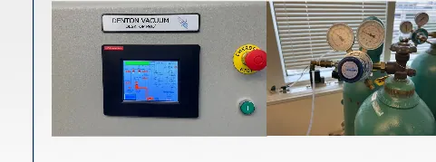
Sputter-deposition tool
Education: B.S. Physics, UTSA (2020).
Now at Tower Semiconductor.
Sputter deposition physics and its effect on transparent conducting oxides
Now at Tower Semiconductor.
Justin Bisignano2024, M.S. MatE
Ultra-wide-bandgap oxides and COMSOL device modeling, including dielectric effects in lateral Ga2O3 MOSFETs.
Dielectric influence on lateral gallium oxide (Ga2O3) MOSFETs using COMSOL Multiphysics
Now Member of Technical Staff, Anthropic.
Shradha Ajith2024, M.S. EE
Assessing optical characteristics of nanoparticle inks for inkjet-printed electronics using UV–Vis spectroscopy
Zane Gray2024, M.S. EE
Research and analysis of multi-phasic piezoelectric composite transducers
Kelechi Abajuo2024, M.S. MatE
Acoustic emission analysis and simulation of piezo spheres
Alaa Alfaifi2022, M.S. MatE
Piezoelectric effect in ultrasound imaging
Seyedeh Azin Torabi2022, M.S. MatE
Inkjet 3D printing of bioelectronics
Mehand Samer2021, M.S. MatE
Nanostructured inorganic metal-halide perovskite for optoelectronics applications
Noah Mohammad2019, M.S. MatE
Piezoelectric sensor to measure physical properties of a non-Newtonian multiphase fluid system
Krishna Karan Ghantasala2017, M.S. EE
Process control using viscosity measurement
Viswa Thej Kankanala2017, M.S. EE
Viscosity and microstructure evaluations
Nawaf Sainid2017, M.S. EE
Energy source for electrical power backup system of airplane using piezoelectricity
Krishna Chaitanya Yaganti2017, M.S. EE
Image processing and multiple-parameter monitoring in process control
Amokrane Hamiti2017, M.S. MatE
Exploration of characteristics of inks for electronic 3D printing
Adil Aledili2017, M.S. EE
Solar energy harvesting for aircraft electrical backup system
Swetha Kinnera2016, M.S. EE
Compact electronic breath-alcohol sensing module
Chandu Gonuguntla2016, M.S. MatE
FEA simulations and preliminary lab verification of thermoelectric energy harvesting under asphalt pavements
Ganga Raju2016, M.S. EE
Piezoresistive pressure sensor using COMSOL
Mounika Ramreddygari2016, M.S. EE
Energy-efficient vehicle detection and speed measurement using a portable sensor network and wireless transmission
Venkat Veeragandham2016, M.S. EE
Area pressure profile of a 2×2 prototype system including sensing and communication
Afrin Zaman2016, M.S. MatE
Experimental investigation of frequency response of sectioned piezoelectric composite in energy harvesting
Avadhoot Herlekar2015, M.S. EE
Design, numerical verification and fabrication of a chip for analog and digital circuit for near-threshold voltage
Swathi Babulal2015, M.S. EE
Microcontroller-based application of biosensing the critical parameters of the human lung
Abhishek Attravanam2015, M.S. EE
Subground temperature sensing and wireless sensor monitoring
Kalagara S. Ramnath Choudary2015, M.S. EE
Portable pre-amplified waveform generator with oscilloscope and high-power dual driver system
Veeren Kukkadapu2015, M.S. EE
Comparative analysis for different rank tensors (3rd and 2nd)
Suryanarayana Surya Maddimsetty2015, M.S. EE
Design and prototype of an electromechanical testing platform for piezoelectric sensors and harvesters
Srilekha Palleboyina2015, M.S. EE
Microcontroller-driven four-channel arbitrary wave generating and synthesizing system with graphic interface
Srikanth Suresh2015, M.S. EE
Nonlinear dielectric property measurements using the GADD system
Manthan Dave2015, M.S. EE
Near-threshold-voltage (NTV) performance of n- and p-type material channels in the AMIS C5N Si-MOS process
Gurram Bindhu Reddy2014, M.S. EE
Microcontroller-based modeling of the human breathing process
Sharat Chandra Koushik Kartala2012, M.S. EE
Multi-sample test control system for dielectric property testing at cryogenic temperatures
Deepanshu Dixit2012, M.S. EE
Virtual lab development in administering remote access
Anish Shinde2012, M.S. EE
Heterodyne interferometry
Swetha Sadineni2011, M.S. EE
Piezoelectric wrist-pulse sensors
Anup Chekuri2010, M.S. EE
Ocean wave energy converters
Sameera Jeereddy2010, M.S. EE
Thermal expansion studies of hydroxyapatite–barium titanate composites
Tapan Patel2010, M.S. EE
Efficient energy-conversion simulation for pulsed voltage sources
Utkal Kandala2010, M.S. EE
Power transmission in space
Nupur Naik2010, M.S. EE
Thermoelectric effect and applications
Gajalakshmi Ganapathy2010, M.S. EE
Real-time driver drowsiness tracking system using an eye-wink sensor
Shalini Basetty2010, M.S. EE
Temperature and frequency dependence of index of refraction by the minimum-deviation technique
Meera Reddy Tetali2010, M.S. EE
Time-domain modeling for microwave effects in materials processing
Sijia Zhu2010, M.S. EE
Dynamic pyroelectric measurement and energy conversion
Bhargavaram Pachala2010, M.S. EE
COMSOL for piezoelectric transducers’ imaging process
Yanamadala Roop Chand2009, M.S. EE
Ultraviolet sensing and zinc oxide microtube applications
Undergraduate and pre-college research alumni 37
Jacklyn Aponte Tapia2026
Undergraduate research on maskless patterning by electrostatic aerosol deposition; semiconductor process development, nanofabrication, lithography, and thin-film materials.
Also: statistical analysis of power-outage data; senior design — close-proximity flood detection using sensor integration.
Now in the semiconductor industry.
B.S. Electrical Engineering, UTSA.
Now in the semiconductor industry.
Hien Do2025–2026
Integrated photonics using a maskless aligner; interests in semiconductors, energy, microfabrication, circuits, and embedded systems.
Inkjet simulation and multifunctional-materials testing in COMSOL.
Core strength: power electronics, PSpice, COMSOL, Arduino, AutoCAD, Cadence PCB. IEEE, SHPE, Engineers Without Borders.
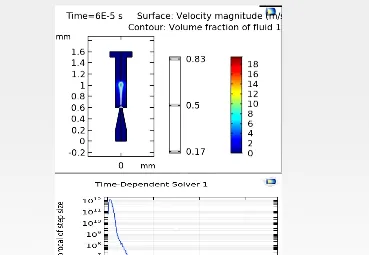
COMSOL inkjet simulation
Now at Los Alamos National Laboratory.
B.S. Electrical Engineering, UTSA.
Now at Los Alamos National Laboratory.
Jonathan Salazar2023–2025
Research Experience for Undergraduates
Luis Santillan2023–2025
Research Experience for Undergraduates
Samuel Ogura2023–2025
Research Experience for Undergraduates
Jose CubillosSummer 2024
CIMA Summer Internship
Andrew ZavalaSummer 2024
CIMA Summer Internship
Jonathan Marrero2023–2024
Research Experience for Undergraduates
Luis Segura2023–2024
Research Experience for Undergraduates
Jose CuellarSummer 2023
CIMA Summer Internship
Jesus ReyesSummer 2023
Inkjet simulation and multifunctional-materials testing in COMSOL.
Core strength: power electronics, PSpice, COMSOL, Arduino, AutoCAD, Cadence PCB. IEEE, SHPE, Engineers Without Borders.
COMSOL inkjet simulation
Now at Los Alamos National Laboratory.
Research Experience for Undergraduates
Ross Sample2022
Research Experience for Undergraduates
Albert Djikeng2018–2019
Honors thesis reader
David Yanes2016–2017
Honors thesis advisor
Marc Castro2012–2013
Honors thesis advisor
Azin TorabiSummer 2018
College of Engineering REU
Ty’Ron BentleySummer 2018
College of Engineering REU
Hunter KimSummer 2018
College of Engineering REU
Albert DjikengSpring–Fall 2018
College of Engineering REU
Zachary LopezSummer 2018
CIMA undergraduate researcher
Hirton David YanesSummer 2017
Undergraduate researcher
Daniel NsekFall 2017
Undergraduate researcher
Steven Rosas2015–2017
Undergraduate researcher
Abdul-Hamid Saaka2015–2017
Undergraduate researcher
Brady Emokpae2015–2017
Undergraduate researcher
Shamariah Jointer2015–2016
Undergraduate researcher
Michael Oparaji2015–2016
Undergraduate researcher
Keith DelahoussayeFall 2011–Spring 2012
comparative study of functionality and cost effectiveness of electronic laboratory virtual instrumentation
Undergraduate researcher
Cesar GarciaSummer 2009
periodically poled structure on microwave transmissions evaluated by scattering parameters
Provost Summer Research Fellow (UT Brownsville)
Donghyun Eric ChoeSummer 2009
Summer undergraduate fellow, Texas Academy of Mathematics and Science (TAMS)
Shejan ShuzaSummer 2018
High school summer assistant
Anjelina DasSummer 2014
High school summer assistant
Riddy KumarSummer 2013
High school summer assistant
Shaneel BinzaidSummer 2013
High school summer assistant
Michael TaoSummer 2012
energy harvesting with the Thinergy ADP
High school summer research
Publications
Publications
The complete bibliography lives on Google Scholar. This section features recent group papers, foundational works, and the dissertations and theses of MeMDRL graduates.
Journal articleRecentFoundationalAdditive manufacturing of functional materials
Finite Element Analysis of Strain-Mediated Direct Magnetoelectric Coupling in Multiferroic Nanocomposites for Material Jetting Fabrication of Tunable Devices
William Paul Flynn, Sean Garnsey, Amar S. Bhalla, Ruyan Guo
Reactive inkjet printing of nanostructured metal oxide microelectronics
Ph.D. dissertation, The University of Texas at San Antonio
Bryan Gamboa(2025)
Experimental and numerical evaluation of stacked piezoelectrics and composite structures for high-efficiency mechanical-to-electrical energy conversion
Ph.D. dissertation, The University of Texas at San Antonio
William Paul Flynn(2025)
Materials jetting fabrication and modeling of printed multiferroic CFO–BTO composites for electronic applications
Ph.D. dissertation, The University of Texas at San Antonio
S. Hossain(2023)
Quantitative and experimental analysis of magnetoelectric and photothermal properties of cobalt ferrite–barium titanate core-shell nanocomposites for biomedical applications
Ph.D. dissertation, The University of Texas at San Antonio
Wasim Hafiz Dipon(2023)
Self-sustaining multi-sensing and wireless communication system powered by efficient energy harvesting from road traffic and heat
Ph.D. dissertation, The University of Texas at San Antonio
Joseph John Parsi(2022)
Smart Tooth: a continuous glucose monitor utilizing pulsed photoacoustic technology
Ph.D. dissertation, The University of Texas at San Antonio
Carlos Acosta(2020)
Experimental and numerical analysis of multi-phase aqueous solutions at steady and unsteady conditions using optoelectric techniques
Ph.D. dissertation, The University of Texas at San Antonio
Brandon Young(2020)
Exploration of ferroic and multiferroic nanomaterials and nanocomposites for hybrid 3D deposition of electromagnetic field sensitive devices
Ph.D. dissertation, The University of Texas at San Antonio
Meng Li(2018)
Multiscale simulation and evaluation of mechanical and electromechanical sensing materials for extreme pressure applications
Ph.D. dissertation, The University of Texas at San Antonio
Juan P. Tamez(2017)
Design, simulation and experimental evaluation of tri-phasic piezoelectric composite transducers
Ph.D. dissertation, The University of Texas at San Antonio
Moumita Dutta(2017)
Ferroics and multiferroics for dynamically controlled terahertz wave propagation
Ph.D. dissertation, The University of Texas at San Antonio
Soutik Betal(2017)
Magnetoelectricity in multi-scale composites and application in nanorobotics for live cell manipulation
Ph.D. dissertation, The University of Texas at San Antonio
Ye Wu(2016)
Magnetic field effect on capacitance and photocurrent properties of metal oxides
Ph.D. dissertation, The University of Texas at San Antonio
Madhu Pal(2014)
Nanostructure characteristics of ferroics and bio-ferroics in relation to the design consideration of nano-sensing elements
Ph.D. dissertation, The University of Texas at San Antonio
Robert McIntosh(2013)
Piezoelectric resonance enhanced microwave and optoelectronic interactive devices
Ph.D. dissertation, The University of Texas at San Antonio
M.S. theses 39
Maria Fernanda Basurto Armijo(2026)
Synthesis and hydroxylation of cobalt ferrite–barium titanate core-shell nanoparticles: surface functionalization toward PEG conjugation
M.S. thesis (MatE), The University of Texas at San Antonio
Luis A. Santillan(2025)
Electrical resistivity in inkjet-printed metal nanoparticle films: percolation behavior and finite-element simulation
M.S. thesis (MatE), The University of Texas at San Antonio
T. E. Abajuo(2025)
Evaluating yttria-stabilized zirconia for solid-state metal-oxygen batteries: interfacial and evaluation challenges
M.S. thesis (MatE), The University of Texas at San Antonio
M. C. Duong(2023)
Hafnium-based metal-organic framework UiO-66 as an inkjet-printed ferroelectric material
M.S. thesis (EE), The University of Texas at San Antonio
Daniel Nsek(2020)
Design and implementation of efficient energy converters for mechanical and thermal energy harvesting
M.S. thesis (EE), The University of Texas at San Antonio
David Yanes(2020)
Interface and control of multiphasic aqueous colloidal formations of CO2 and ice mixtures via integrated sensors
M.S. thesis (MatE), The University of Texas at San Antonio
W. P. Flynn(2019)
Dielectric non-destructive evaluation of fiber-reinforced polymer composites
M.S. thesis (MatE), The University of Texas at San Antonio
M. Monroy Gonzalez(2019)
Inkjet-printable metal-organic framework materials: UiO-66-(Hf) as a ferroelectric ink and flexible pressure sensor
M.S. thesis (MatE), The University of Texas at San Antonio
S. T. Palmer(2019)
Photonic sintering of 3D inkjet-fabricated advanced electronic materials
M.S. thesis (MatE), The University of Texas at San Antonio
M. B. Estrada(2019)
Thermoelectric performance optimization of a stand-alone roadway-embedded sensing module
M.S. thesis (MatE), The University of Texas at San Antonio
V. Ly(2018)
A study on pH, zeta potential, optical behavior, and a sensing model for optical properties of ice slurry
M.S. thesis (MatE), The University of Texas at San Antonio
F. Olvera(2018)
The effects of critical sputtering parameters on aluminum zinc oxide thin films for transparent conducting oxide applications
M.S. thesis (MatE), The University of Texas at San Antonio
G. A. Nall(2017)
Design and optimization for casing of a thickness-mode piezoelectric roadway energy harvester
M.S. thesis (MatE), The University of Texas at San Antonio
A. R. Sebastian(2017)
Electrical characteristics of hydroxyapatite (Ca)x(BaTiO3)1−x composite
M.S. thesis (MatE), The University of Texas at San Antonio
M. Pole(2016)
Degradation of a piezoelectric device as an energy harvester under equivalent traffic-stress conditions
M.S. thesis (MatE), The University of Texas at San Antonio
S. Y. Tahhan(2016)
Dynamic pyroelectric energy harvesting from lithium tantalum oxide (LiTaO3)
M.S. thesis (EE), The University of Texas at San Antonio
A. C. K. Chakravarthy(2016)
Efficient energy-conversion circuits for highway road-traffic energy harvesting using piezoelectric devices
M.S. thesis (EE), The University of Texas at San Antonio
B. D. Young(2016)
Electric-field-biased Faraday rotation in multiferroic chromium-doped bismuth ferrite thin films
M.S. thesis (EE), The University of Texas at San Antonio
Amadou O. Diallo(2016)
Measurements and properties of ice particles and carbon dioxide bubbles in aqueous mixture utilizing optical techniques
M.S. thesis (MatE), The University of Texas at San Antonio
B. Gamboa(2016)
Piezoelectric stack transducer evaluation and comparison for optimized energy harvesting
M.S. thesis (MatE), The University of Texas at San Antonio
C. Rabun(2016)
Surface charge distribution of piezoelectrics at thickness and planar piezoresonance
M.S. thesis (EE), The University of Texas at San Antonio
P. Gopalakrishnan(2016)
Testing and evaluation of different energy storage devices for piezoelectric energy harvesting under road conditions
M.S. thesis (MatE), The University of Texas at San Antonio
W. H. Dipon(2016)
Ultra-low-power embedded system with sensing and data logging for efficient operation of energy harvesting from road traffic
M.S. thesis (EE), The University of Texas at San Antonio
F. A. Chowdhury(2015)
Analysis of multilayer structure of piezoelectric thin film by X-ray diffraction
M.S. thesis (EE), The University of Texas at San Antonio
S. R. Vadlamani(2015)
Determination of the full family of piezoelectric coefficients by measuring strain using a vibrometer and a fiber-optic sensor
M.S. thesis (EE), The University of Texas at San Antonio
S. M. Malladi(2015)
Fiber-optic sensors and digital signal processing in displacement measurements
M.S. thesis (EE), The University of Texas at San Antonio
A. Asghari(2015)
Fluid and microfluidic dielectric measurement using a cavity perturbation method at microwave C-band
M.S. thesis (MatE), The University of Texas at San Antonio
P. Sengupta(2015)
Modeling and characterization of ferroelectric materials in CMOS technology
M.S. thesis (EE), The University of Texas at San Antonio
M. M. Montes Aguirre(2015)
Properties of silver and copper nanoparticle-containing aqueous solutions and evaluation of their in vitro activity against Candida albicans and Staphylococcus aureus biofilms
M.S. thesis (MatE), The University of Texas at San Antonio
Mazumder(2014)
Configuring Windows Server 2012 and an online calendar system for remote laboratory access control with video streaming
M.S. thesis (EE), The University of Texas at San Antonio
M. Q. Hasan(2014)
Micro-power non-inductive voltage boost converter for pyro energy harvesters at MOS sub-threshold voltage
M.S. thesis (EE), The University of Texas at San Antonio
K. Delahoussaye(2014)
Piezoelectric dilatometric analysis using homodyne and heterodyne laser interferometry
M.S. thesis (MatE), The University of Texas at San Antonio
M. S. Rahman(2014)
Spectroscopic ellipsometry analysis and nanostructure characterization of ferroelectric PZT thin films
M.S. thesis (MatE), The University of Texas at San Antonio
C. T. Morrow(2012)
Magnetoelectric measurement and analysis under cryogenic conditions
M.S. thesis (EE), The University of Texas at San Antonio
K. Mehta(2012)
Remote laboratory for a dielectric measurement system
M.S. thesis (MatE), The University of Texas at San Antonio
J. Jung(2011)
The effect of the sputtering parameters on ITO films deposited by RF magnetron sputtering
M.S. thesis (EE), The University of Texas at San Antonio
L. Bonam(2010)
Interaction of microwave energy (900 MHz–2.2 GHz) with human brain tissue
M.S. thesis (EE), The University of Texas at San Antonio
M. Y. Belgur Shamiullah(2010)
Web-based real-time remote laboratory
M.S. thesis (EE), The University of Texas at San Antonio
J. P. Tamez(2009)
A polyvinylidene fluoride (PVDF) piezoelectric biomedical transducer for intravascular monitoring of blood pressure and arterial blood flow rate
M.S. thesis (EE), The University of Texas at San Antonio
Events
Conferences, meetings, and group seminar
MeMDRL faculty organize and host recurring materials and devices meetings. Group members often present and volunteer.
Weekly group seminar
Internal research seminar with in-person and online options. Guests are welcome; email a team member or a PI to receive email updates. Students interested in presenting should contact their advisor.
Biosensors for detecting cancer prognosis and drug resistance
Conferences and professional meetings
PastConference
MS&T26: Materials Science & Technology
Symposium: Advances in Dielectric Materials and Electronic Devices
When: 4–7 October 2026 · Where: Pittsburgh, Pennsylvania, USA
Organizers: Amar Bhalla, The University of Texas at San Antonio; Ruyan Guo, The University of Texas at San Antonio; Rick Ubic, Boise State University; Matjaž Spreitzer, Jožef Stefan Institute; Tanmoy Maiti, IIT Kanpur
Sponsorship: ACerS Electronics Division.
Scope: Recent developments in design, preparation, and properties of dielectric and electromagnetic materials, and manufacturing issues related to dielectric materials and electronic circuits.
Photonic Fiber and Crystal Devices: Advances in Materials and Innovations in Device Applications XXI
When: 29 August–2 September 2027 · Where: San Diego, California, USA
Organizers: Conference chairs: Shizhuo Yin (Penn State University); Ruyan Guo (UT San Antonio)
We look forward to returning to beautiful San Diego again next year. Mark your calendar: 29 August–2 September 2027.
UpcomingConference
Ferroelectrics Meeting of the Americas (FMAs)
PACC-FMAs 2030
When: 7–11 July 2030 · Where: Hilton Panama, Panama
Organizers: Founding organizer: Dr. Amar Bhalla
Dr. Bhalla, founding organizer of the Ferroelectrics Meeting of the Americas, continues to lead the organization of the FMA. This meeting is allied with The American Ceramic Society, with previous meetings held in Panama: PACC-FMAs 2022 (24–28 July 2022) and PACC-FMAs 2024 (7–11 April 2024). PACC-FMAs 2030 is scheduled to return to the Hilton Panama, 7–11 July 2030. Meeting announcement is forthcoming.
News
Group news and archive
Newest first. Talks and conferences are also listed under Events.
· Publications
Collaborative paper with Universidade Federal de Uberlândia
“Sn-driven ferroelectric–antiferroelectric crossover in Ba-modified PLZT ceramics: structural evolution and functional response,” led by Dr. J. D. S. Guerra…
Read more
“Sn-driven ferroelectric–antiferroelectric crossover in Ba-modified PLZT ceramics: structural evolution and functional response,” led by Dr. J. D. S. Guerra, is to appear in Materials Chemistry and Physics 370 (15 December 2026).
Postdoctoral Researcher Sean Garnsey Wins $25K Grand Prize in Advanced Nuclear Energy Technology Challenge
Congratulations to Dr. Sean Garnsey who recently won the $25,000 Grand Prize at the Advanced Nuclear Energy Technology Challenge, hosted by ATI | Advanced…
Read more
Congratulations to Dr. Sean Garnsey who recently won the $25,000 Grand Prize at the Advanced Nuclear Energy Technology Challenge, hosted by ATI | Advanced Technology International and TechConnect. His winning pitch, developed through Enova Concepts, LLC, featured UbiRAD (Ubiquitous Radiological Anomaly Detection), an innovative technology for real-time, site-wide radiation monitoring to improve the safety of next-generation nuclear energy systems.
· Talks and events
Trippy gives invited talk at SPIE Optics + Photonics
Matt Trippy delivered an invited talk, “Modeling approaches to support discovery of quantum properties of materials with validation by graphene studies,” at…
Read more
Matt Trippy delivered an invited talk, “Modeling approaches to support discovery of quantum properties of materials with validation by graphene studies,” at the SPIE Optics + Photonics Annual Meeting and Exhibition in San Diego, in the conference 2D Materials: Growth, Integration, and Interfaces.
· Publications
Three MeMDRL papers at SPIE Photonics and Optics 2026
MeMDRL researchers Matt Trippy, Sean Garnsey, and Max Estrada presented and published three papers at the SPIE Photonics and Optics 2026, highlighting…
Read more
MeMDRL researchers Matt Trippy, Sean Garnsey, and Max Estrada presented and published three papers at the SPIE Photonics and Optics 2026, highlighting advances in AI-enabled quantum materials discovery, reactive inkjet-printed ZnO devices, and machine learning for smart manufacturing.
Modeling approaches to support discovery of quantum properties of materials with validation by graphene studies, Matt Trippy; Ruyan Guo; Amar Bhalla; DOI: https://doi.org/10.1117/12.3113164
Design and processing of reactive inkjet printed zinc oxide photodetectors and electromechanical devices, Sean Garnsey; Amar S. Bhalla; Ruyan Guo; DOI: https://doi.org/10.1117/12.3114480
Toward likelihood-based latent video prediction for visual observation in drop-on-demand inkjet printing, Maximilian Bernard Estrada; Ruyan Guo; Amar Bhalla; DOI: https://doi.org/10.1117/12.3114647
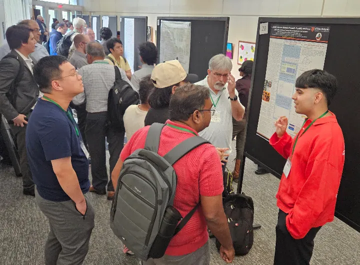
· Talks and events
MeMDRL at the Texas Quantum Summit
Ayush Neupane and Matt Trippy, with Dr. Ruyan Guo, presented a poster on research capabilities and quantum-computing and quantum-sensing applications at the…
Read more
Ayush Neupane and Matt Trippy, with Dr. Ruyan Guo, presented a poster on research capabilities and quantum-computing and quantum-sensing applications at the Texas Quantum Summit (13–14 August 2026), hosted by The University of Texas at Dallas.
· Lab updates
Group celebration of academic and career milestones
MeMDRL gathered with colleagues and families in July 2026 to mark recent degrees, fellowships, and next steps.
Read more
MeMDRL gathered with colleagues and families in July 2026 to mark recent degrees, fellowships, and next steps.
Earlier news
2026 7
6 May 2026Guo on ACerS Ceramic Tech Chat
Dr. Ruyan Guo sat down with Lisa McDonald to discuss interdisciplinary research experience in conjunction with The American Ceramic Society. The episode is Cross-collaborations for multifunctional electronics.
5 May 2026Tapia receives ECE Outstanding Undergraduate Research Award
Congratulations to Jacklyn Aponte Tapia on the Department of Electrical Engineering Outstanding Undergraduate Research Award.
28 April 2026Research Excellence Award, The University of Texas at San Antonio (2026)
Dr. Ruyan Guo received the university’s Research Excellence Award (tenured faculty) at the 2026 University Excellence Awards ceremony on 28 April 2026.
3 April 2026Miyahara presents EE research seminar on quantum-dot readout
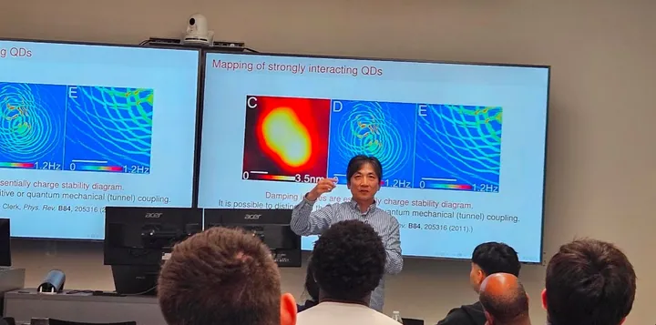
MeMDRL hosted Dr. Yoichi Miyahara, Associate Professor in the Department of Physics and in the Materials Science, Engineering and Commercialization program at Texas State University. He presented an invited EE research seminar, “Quantum state readout of individual quantum dots enabled by coupling to a mechanical resonator with high quality factor.”
11 February 2026Inaugural EMRG Ph.D. Fellowship awarded to Paul Flynn
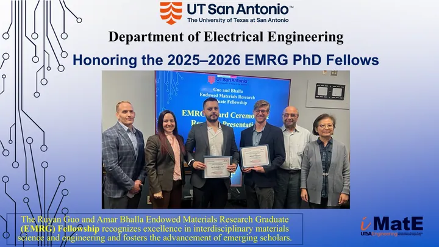
Congratulations to William Paul Flynn, Electrical Engineering, recipient of the inaugural Ruyan Guo and Amar Bhalla Endowed Materials Research Graduate (EMRG) Ph.D. Fellowship for 2025–2026. His dissertation work is on materials jetting fabrication and modeling of printed multiferroic CFO–BTO composites for electronic applications.
The Department of Electrical Engineering also recognized Luis Perdomo Hurtado, Mechanical Engineering, as an EMRG Ph.D. Fellow for work on nickel-based superalloys in hydrogen-rich environments. The fellowship recognizes excellence in interdisciplinary materials science and engineering.
23 January 2026Saxena visits UTSA Physics and MeMDRL
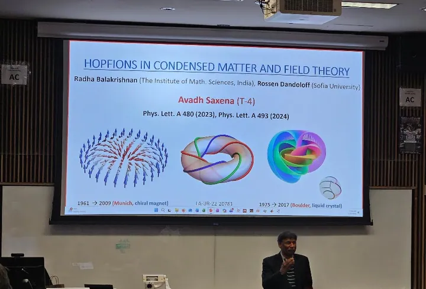
Dr. Avadh Saxena, Scientist in Physics of Condensed Matter and Complex Systems at Los Alamos National Laboratory, visited the UTSA Department of Physics and Astronomy and the MeMDRL group. He presented an invited Physics seminar, “Hopfions in condensed matter and field theory.”
January 2026Bhalla named a Highly Ranked Scholar — Lifetime
Dr. Amar Bhalla is recognized as a Highly Ranked Scholar — Lifetime (2025 by ScholarGPS). Lifetime Highly Ranked Scholars are eminent authors whose top-percentage ranks place them in the top 0.05% of all scholars due to their lifetime scholarly contributions in four categories: Overall (All Fields); their specific Field; their specific Discipline; and all Specialties with which they are associated. ScholarGPS lists his Field as Engineering and his Discipline as Materials Science and Engineering, with 850 total publications, 26,782 predicted citations, and an overall (all fields) predicted h-index of 75.
2025 7
12 December 2025Fears receives ECE Outstanding Graduate Research Award (M.S.)
Congratulations to Devon Fears on the Department of Electrical Engineering Outstanding Graduate Research Award in the M.S. category.
24 October 2025Alumni seminar: Bomthapalli on automotive SoC functional safety
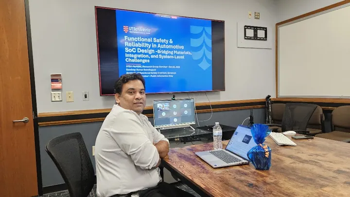
MeMDRL alumnus Sandeep Kumar Bomthapalli, Senior Staff Functional Safety Architect at Synopsys, returned to UTSA and gave an invited talk, “Functional safety and reliability in automotive SoC design — bridging materials, integration, and system-level challenges.”
15 June 2025Third annual Summer High School Engineering Workshop
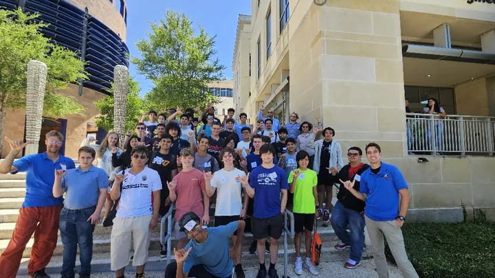
MeMDRL ran another weeklong Summer High School Engineering Workshop — the third year in a row. More than 100 high school students took part. Participants signed a photo/media release before joining. Support from the Department of Energy (DOE NNSA MSIPP) and the Department of the Navy (DoN HBCU/MI program) is gratefully acknowledged.
9 June 2025Flynn receives the 2025 Mo and Jila Jamshidi Fellowship
Congratulations to Paul Flynn on the 2025 Mo and Jila Jamshidi Fellowship, a distinction for exemplary research and contribution by a doctoral student.
9 June 2025Santillan named Spring 2025 ECE Outstanding Graduate Researcher (M.S.)
Congratulations to Luis Santillan on the Spring 2025 ECE Outstanding Graduate Research Award in the M.S. category, a further milestone in his graduate research.
May 2025Santillan selected for NSF GRFP
Congratulations to Luis Santillan for being selected for the NSF Graduate Research Fellowship Program (GRFP) in 2025. His GRFP proposal is on new-generation nitride ferroelectrics for low-power in-memory computing. While NSF was unable to fund all selected applicants due to national budget reductions, Santillán’s recognition among the nation’s top young researchers highlights his potential as a burgeoning scholar.
2023–2025Group papers on printed films, stacked harvesters, and magnetoelectric nanocomposites
Students and alumni published recent work in Journal of Composites Science and Electronics on inkjet-printed gold films, 1-3 piezoelectric harvesters, and strain-mediated magnetoelectric coupling. See Publications.
2024 4
November 2024Abajuo receives ECE Outstanding Graduate Research Award (M.S.)
Congratulations to Trust Abajuo for being honored as the recipient of the ECE Outstanding Graduate Research Award — M.S., Department of Electrical and Computer Engineering, UTSA.
October 2024Guo named to the ACerS Board of Directors
Dr. Ruyan Guo has been named to the Board of Directors of The American Ceramic Society (ACerS) for the term 2024–2027. As a member of the Board, Dr. Guo will help guide ACerS’s strategic direction, governance, and programs, continuing her long-standing commitment to advancing ceramics and related materials science.
May 2024Sean Garnsey receives the 2024 Mo and Jila Jamshidi Fellowship
Congratulations to Sean Garnsey on the 2024 Mo and Jila Jamshidi Fellowship, a distinction for exemplary research and contribution by a doctoral student.
2024Guo named to UTSA Academy of Distinguished Researchers
Dr. Ruyan Guo was elected to the UT San Antonio Academy of Distinguished Researchers. Other recent honors include the 2023 ACerS John Jeppson Award and the 2023 Outstanding Graduate Mentor Award from the UTSA Graduate School.
2023 4
1 September 2023Guo speaks at ONR Naval Opportunity Awareness Workshop
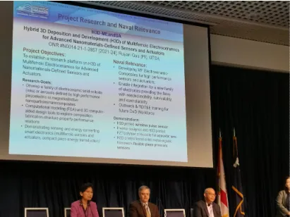
Dr. Ruyan Guo spoke at the ONR Naval Opportunity Awareness Workshop (OAW) on a DoN HBCU/MI PI panel, sharing experience working with the Department of the Navy HBCU/MI program.
May 2023Dipon receives ECE Outstanding Teaching Assistant Award
Congratulations to Wasim Dipon for being honored as the recipient of the ECE Outstanding Teaching Assistant Award, Department of Electrical and Computer Engineering, UTSA.
April 2023DoN HBCU/MI post-award site visit at UTSA
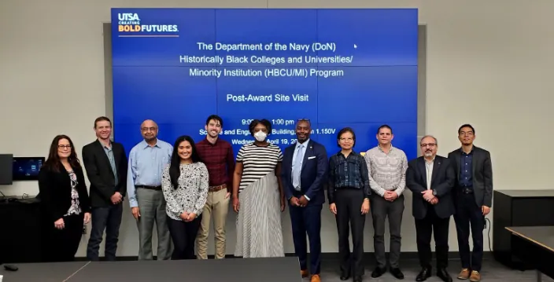
The Department of the Navy HBCU/MI / ONR site-visit team — Mr. Maurice Civers-Davis, Dr. Cyntrica Eaton, and Mr. Layvon Washington — visited UTSA. Thank you for your guidance and support.
March 2023Duong receives ECE Outstanding Graduate Research Award (M.S.)
Congratulations to Melinda Duong for being honored as the recipient of the ECE Outstanding Graduate Research Award — M.S., Department of Electrical and Computer Engineering, UTSA.
2022 1
May 2022Houssein receives ECE Outstanding Teaching Assistant Award
Congratulations to Shadeeb Houssein for being honored as the recipient of the ECE Outstanding Teaching Assistant Award, Department of Electrical and Computer Engineering, UTSA.
2021 1
September 2021UTSA joins DOE NNSA MSIPP manufacturing consortium
MeMDRL is pleased to announce that UTSA is a partner in a new U.S. Department of Energy National Nuclear Security Administration Minority Serving Institution Partnership Program (MSIPP) consortium led by The University of Texas Rio Grande Valley, with the University of Arizona, Los Alamos National Laboratory, and Oak Ridge National Laboratory. The consortium strengthens research, education, and workforce development in advanced manufacturing and national security. UTSA co-PIs are Dr. Frank Chen, Dr. Ruyan Guo, and Dr. Brendy Rincon Troconis. MeMDRL students contribute to additive manufacturing of piezoelectric materials and have access to internship opportunities at the national laboratories.
2020 2
December 2020Acosta receives ECE Outstanding Graduate Research Award (Ph.D.)
Congratulations to Carlos Acosta for being honored as the recipient of the ECE Outstanding Graduate Research Award — Ph.D., Department of Electrical and Computer Engineering, UTSA.
May 2020Garnsey named Smart Energy Scholar
Sean Garnsey was awarded the San Antonio Area Foundation | CPS Energy / Itron, Inc. Smart Energy Scholar recognition.
2019 2
December 2019Yanes receives ECE Outstanding Graduate Research Award (M.S.)
Congratulations to David Yanes for being honored as the recipient of the ECE Outstanding Graduate Research Award — M.S., Department of Electrical and Computer Engineering, UTSA.
March 2019Guo appointed NSF ECCS Program Director
Dr. Ruyan Guo was selected by the National Science Foundation to serve as Program Director (rotator) in the Electrical, Communications and Cyber Systems (ECCS) Division, beginning March 2019. The appointment reflects her record in electronic and photonic materials and devices.
2018 9
31 Dec 2018Nanorobot research listed No. 1 in UTSA’s 2018 Year in Review
Soutik Betal’s doctoral work with Guo and Bhalla produced magnetically controlled nanorobots later recognized by Guinness World Records as the smallest medical robot.
6 Sep 2018MeMDRL–LANL terahertz work highlighted by DOE
“Magnetoelastoelectric coupling in core-shell nanoparticles…” Nanoscale 9, 13052 (2017), selected by the DOE Science News Source.
September 2018Dipon awarded Presidential Dissertation Fellowship
Congratulations to Wasim Dipon for being awarded the Presidential Dissertation Fellowship (2018–2022).
21 Aug 2018Alumna Moumita Dutta receives Intel Divisional Award
Dr. Dutta (Ph.D. EE, Dec. 2017) was recognized in her first year at Intel.
10 August 2018Bhalla named ACerS Distinguished Life Member
Congratulations to Dr. Amar Bhalla, recognized in the ACerS 2018 class of Distinguished Life Members. The Distinguished Life Member Award is the highest honor accorded by The American Ceramic Society and recognizes eminent contribution to the ceramic and glass profession.
June 2018UTSA researchers set Guinness World Record for smallest medical robot
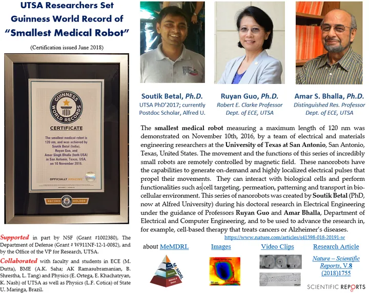
MeMDRL set a Guinness World Record for the world’s smallest medical robot. The 120 nm core-shell multiferroic nanocomposite can interact with biological cells and perform cell targeting, membrane permeation, cellular patterning, and controlled transport. Functionality was demonstrated by Dr. Soutik Betal during his doctoral research with Dr. Ruyan Guo and Dr. Amar S. Bhalla. Guinness World Records certified the result as Officially Amazing. Read the research article in Scientific Reports: doi:10.1038/s41598-018-20191-w.
May 2018Dutta receives ECE Outstanding Graduate Research Award (Ph.D.)
Congratulations to Moumita Dutta for being honored as the recipient of the ECE Outstanding Graduate Research Award — Ph.D., Department of Electrical and Computer Engineering, UTSA.
May 2018Senior design team wins first prize at College of Engineering Tech Symposium
Congratulations to Ahmed Mummin and his senior design team for winning first prize for Senior Design Project Demonstration, “Malaria Diagnosis Using Magneto Optic Techniques,” College of Engineering Tech Symposium.
March 2018Djikeng places in UTSA Honors Experiential Showcase
Congratulations to Albert Djikeng for winning 2nd place in the UTSA Honors Experiential Showcase — Skill Development category, Honors College, UTSA.
2017 5
December 2017MeMDRL celebrates ten years at UTSA
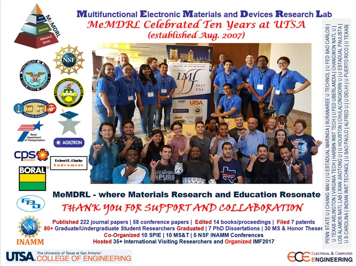
MeMDRL — where materials research and education resonate — marked ten years at UTSA (established August 2007). By that anniversary the laboratory had published 222 journal papers and 58 conference papers, edited 14 books and proceedings, and filed 7 patents or disclosures. More than 80 graduate and undergraduate researchers had completed work in the group, including 7 Ph.D. dissertations and 30 M.S. and honors theses. The group had co-organized 10 SPIE, 10 MS&T, and 5 NSF INAMM conferences, hosted 35+ international visiting researchers, and organized IMF-14 in San Antonio.
4–8 September 2017UTSA hosts the 14th International Meeting on Ferroelectricity
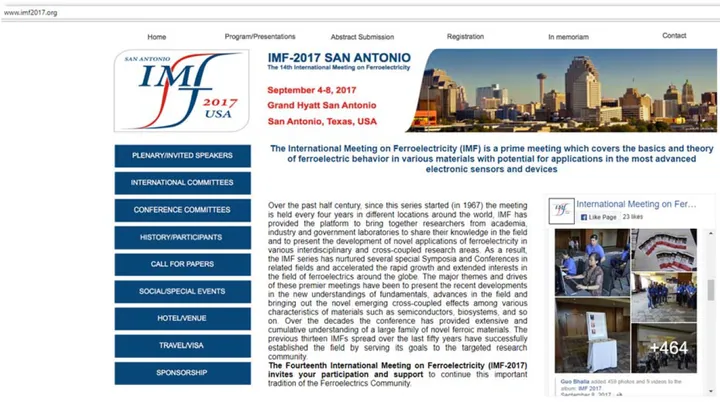
UTSA hosted the Fourteenth International Meeting on Ferroelectricity (IMF-14), 4–8 September 2017, at the Grand Hyatt San Antonio. Dr. Amar Bhalla served as General Co-Chair and Dr. Ruyan Guo as Local Chair. MeMDRL group members volunteered in meeting support and presented research findings.
September 2017Gamboa awarded Presidential Dissertation Fellowship
Congratulations to Bryan Gamboa for being awarded the Presidential Dissertation Fellowship (2016–2020).
July 2017DoD DURIP supports hybrid 3D digital deposition
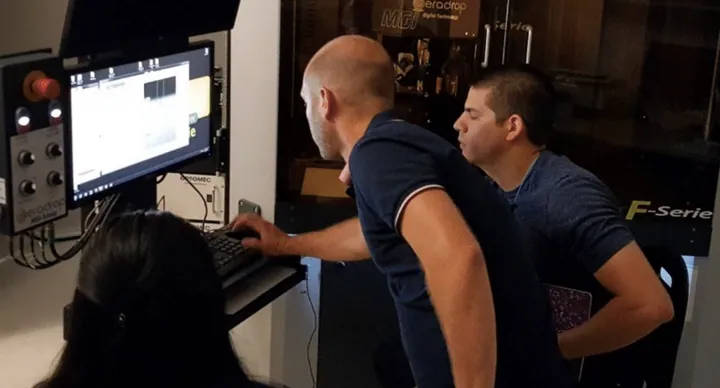
MeMDRL expanded advanced manufacturing capabilities through new equipment made possible by a DoD DURIP grant (Dr. Guo, lead PI). Acquisition and installation of a Ceraprint F-Serie hybrid 3D digital deposition system was underway. The investment strengthened research in functional materials and additive manufacturing and created hands-on training for undergraduate and graduate students in advanced manufacturing and defense-relevant technologies.
1 May 2017NSF I-Corps award for low-power chip module
Guo, Shuza Binzaid, and students received I-Corps support to examine commercial paths for a near-threshold voltage-regulator chip.
2016 5
December 2016Jointer receives Outstanding ECE Woman Engineer Graduate Award
Congratulations to Shamariah Jointer for being the first recipient of the ECE Professional Woman Faculty Award: Outstanding ECE Woman Engineer Graduate Award.
December 2016Pal receives ECE Outstanding Graduate Research Award (Ph.D.)
Congratulations to Madhu Pal for being honored as the recipient of the ECE Outstanding Graduate Research Award — Ph.D., Department of Electrical and Computer Engineering, UTSA.
September 2016Betal awarded Presidential Dissertation Fellowship
Congratulations to Soutik Betal for being awarded the Presidential Dissertation Fellowship (2016).
September 2016Dutta awarded Presidential Dissertation Fellowship
Congratulations to Moumita Dutta for being awarded the Presidential Dissertation Fellowship (2015 and 2016).
April 2016Group members signal MeMDRL
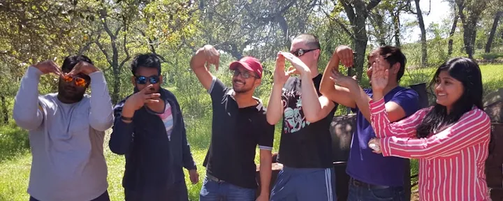
Laboratory members posing the letters of the group name — a snapshot of the community in April 2016.
2015 2
October 2015Nall and Pole named 2015 ASCE Innovation Contest awardees
George Nall and Mayur Pole are the awardees of the 2015 ASCE Innovation Contest. Congratulations!
September 2015Pal awarded Presidential Dissertation Fellowship
Congratulations to Madhu Pal for being awarded the Presidential Dissertation Fellowship (2014 and 2015).
2007 1
6 September 2007MeMDRL established at UTSA
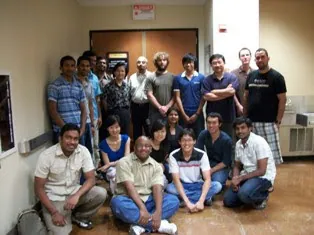
The Multifunctional Electronic Materials and Devices Research Laboratory was established at The University of Texas at San Antonio.
Join
Working with MeMDRL
Openings change with funding. Incoming graduate students must also apply to the appropriate UTSA degree program.
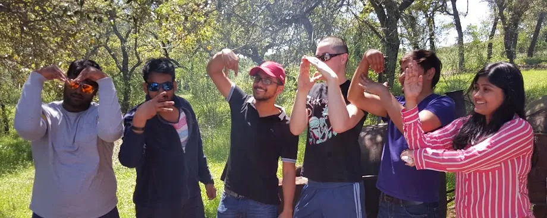
Group members signaling “MeMDRL,” April 2016.
Current opportunities
Ph.D. students [no currently funded position available] — inquire; admission is through UTSA ECE or related doctoral programs.
M.S. students ECE and Advanced Materials Engineering (MatE).
Undergraduate students Register under Research Experience for Undergraduates (and other REU/internship opportunities upon announcement).
Postdocs and visitors Contact faculty if you have a topic and, for postdocs, a funding plan.
Research collaborations and shared facility use Collaborators and visitors work with the laboratory by arrangement. For collaboration or shared use, contact the laboratory directors.
How to apply
Email Dr. Ruyan Guo with a CV, unofficial transcript, and a short note on which theme interests you. Incoming graduate students must also apply to the appropriate UTSA degree program.
MeMDRL is sustained by named faculty support, competitive awards, university investment, and students and collaborators. Opinions on this page are those of the authors and do not necessarily reflect the views of any sponsor.
Support the MRG Fellowship or the Lab
Friends and alumni who wish to support student MRG fellowships or laboratory capabilities may give through UTSA. You may also contact Dr. Guo, Dr. Bhalla, or the Klesse College development office.
On the UTSA form, choose “If your preferred designation isn’t shown,” then enter designation/fund name MRG Fellowship or G00663.
Materials Research Graduate (MRG) Fellowship
Materials Research Graduate (MRG) Fellowships have been offered since 2009 through MeMDRL faculty research grants and the generosity of dedicated donors. Historically, up to ten merit-based awards of $1,000 have been available each year to full-time graduate students conducting research in electronic materials and devices.
MRG Fellowship recipients receive:
A competitive fellowship award of $1,000; and
An out-of-state tuition waiver for the academic year for recipients who do not already qualify for Texas resident tuition rates.
The MRG Fellowship has had a significant impact, particularly for master’s and international students, by helping reduce financial barriers and support research training. In addition to graduate student support, undergraduate researchers have also benefited from research grants and educational pathways such as CIMA and LSAMP programs.
Ruyan Guo and Amar Bhalla Endowed Materials Research Graduate (EMRG) Fellowship
Annual EMRG Fellowship Award — up to two awards, $2,000 to $5,000 each. Endowment of $100,000 including Klesse matching.
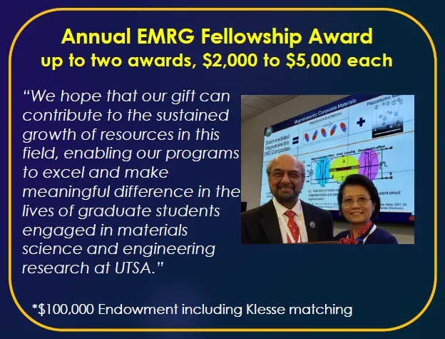
Purpose
To recognize excellence in graduate research in interdisciplinary materials science and engineering and foster the advancement of emerging scholars.
Eligibility
Degree-seeking M.S. or Ph.D. students in good academic standing.
M.S.: in the final semester of thesis research or graduated in 2025.
Ph.D.: completed the dissertation proposal examination.
Research within CEID-administered graduate programs (future university-wide programs will also qualify).
Criteria
Research quality (originality, rigor, and clarity); impact and relevance (advancement of the field and interdisciplinary value); track record (publications, achievements, and references). Emphasis is given on electronic materials and devices, interdisciplinary contributions, and international impact.
The inaugural EMRG Ph.D. Fellows for 2025–2026 were announced on 11 February 2026.
Current and recent support
Official sponsor marks are shown for acknowledgement. They do not imply endorsement of this page.
Selected recent and prior awards 46
U.S. Department of Energy (NNSA)
Consortium of Advanced Additive-Manufacturing Research and Education for Energy Related Systems (CA2REERs)
3D Printed Electronics with Material Properties Engineered for Cold Survivability
Office of Naval Research (ONR) / U.S. Navy
Hybrid Three-Dimensional Deposition and Development (H3D) of Multiferroic Electroceramics for Advanced Nanomaterials-Defined Sensors and Actuators
Hybrid 3-D Digital Deposition Platform for Bottom-Up Fabrication of Multicomponent-Multiferroic Composites
Unified Approach to Increase STEM Undergraduate Students Employment in the Department of the Navy
Design, Simulation, and Characterization of Novel Piezoelectric and Electrostrictive Composite Materials
Department of Defense (ARO / ONR)
Resonance Defined High-Performance Sensors and Modulators
U.S. Air Force
Updated Electronic File Plans for TEMD Device
National Science Foundation (NSF)
Scholarship Program for Undergraduate Retention and Success (SPURS)
I-Corps: Near-Threshold-Voltage Regulation Module
Conference Support for the Fourteenth International Meeting on Ferroelectricity
Transformative Concepts and Investigations for Piezoelectric Resonance Defined Devices
International Network on Advanced and Multifunctional Materials (INAMM)
NIRT: Composition Graded, Epitaxial Oxide Nanostructures: Fabrication and Properties
MRI: Acquisition of an Integrated System for Advanced Visualization with Haptic Feedback Control
Design and Processing of Novel Electronic Composite Materials
Electrical Engineering Research Experience for Undergraduates (EEREU)
NSF REU Site: Electrical Engineering Research Experiences for Undergraduates
Microwave Growth and Characterization of Zinc Oxide Single Crystal Microtubes for Optoelectronic Applications
Collaborative Research: FRG Local Dynamic Origins of Relaxor Ferroelectricity
Structure-Property-Chemistry Relationships in Ferroelectric Bronzes (and REU Supplements)
Acquisition of an Optical Image Furnace for Ferroic Materials and Education
Morphotropic Phase Boundary Systems in Ferroelectric Tungsten Bronze Family (and REU Supplement)
Polarization Fluctuation Phenomena in Tungsten Bronze Ferroelectric Materials
Texas Department of Transportation (TxDOT)
Harvesting Energy from Roadways Using Piezoelectric-Based Systems
City Public Service (CPS Energy) / Local Government
Hybrid Integrated Sensing and Energy Conversion (HISEC) System for Harvesting Mechanical and Thermal Energy from Roadways
Texas Higher Education Coordinating Board
Intraarterial Revascularization and Local Brain Cooling in Acute Stroke Treatment
U.S. Army
Ferroelectric Resource Center for Frequency Agile Materials for Electronics
CRDF (U.S. Civilian Research and Development Foundation)
Patterned Ferroelectric Thin Films and 3D Integrated Optical Elements
Production of Periodically Poled Lithium Niobate Crystals and Study of Poling Mechanisms
Industry sponsors
Exploration of Additive Manufacturing and Sintering
Non-Destructive Evaluation Technologies for Product Fabrication and Assessment
Deriving Mathematical Models and Feedback Solutions
Measured Attribute Effect on Drink Properties
Method of Measuring and Profiling
Cost Effective Production of Piezoelectric Single Crystal Material
Single Crystal Fibers by Laser Heated Pedestal Growth Technique for Initiating Oriented Grain Growth
Ferroelectric Oxide Materials
Single Crystal Ferroelectric and Tungsten Bronze Growth
University / institutional support
Strategic Investment Fund (SIF), UTSA
UTSA T2 Grant: Aerosol-based 3D Printing (A3DP): An Open Research Platform for Composite Materials for Microelectronics
STARS Grant
NSF IPA Assignment (Program Director Service)
Robert E. Clarke Endowment for Distinguished Professorship in Electrical and Computer Engineering
UTSA Special Research Grant
Robert E. Clarke, Jr. Endowed Distinguished Professorship
Established in 2005 by UTSA alumni Dr. Loretta J. Clarke (B.S. ’87, M.S. ’90) and Mr. Jeffrey W. Clarke (B.S. ’86), the Robert E. Clarke, Jr. Distinguished Professorship in Electrical Engineering honors Mr. Clarke’s father and was the first of four faculty positions endowed by the Clarke family at UTSA.
Dr. Ruyan Guo, co-director of MeMDRL, holds the professorship. The endowment supports faculty research, student mentoring, and excellence in electronic materials and devices.
MeMDRL gratefully acknowledges the Clarke family’s enduring investment in electrical engineering at UT San Antonio.
Facilities are only accessible after training. Potential users should email a PI in advance.
Write to the laboratory
For graduate study, research collaboration, shared facility use, or seminar attendance, email ruyan.guo@utsa.edu. Messages are read by the laboratory directors.